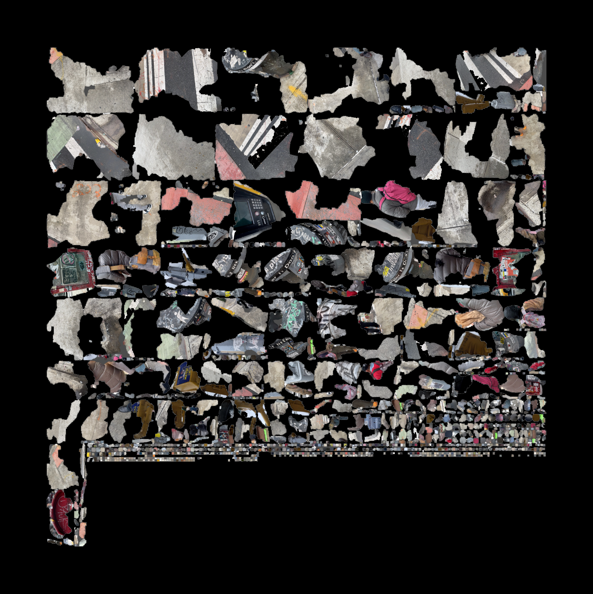

Loading time...

"Those who arrive at Thekla can see little of the city beyond the plank fences, the sackcloth screens, the scaffoldings, the metal armatures, the wooden catwalks hanging from ropes or supported by sawhorses, the ladders, the trestles. If you ask, "Why is Thekla's construction taking such a long time?" The inhabitants continue hoisting sacks, lowering leaded strings, moving long brushes up and down, as they answer, "So that its destruction cannot begin." And if asked whether they fear that, once the scaffoldings are removed, the city may begin to crumble and fall to pieces, they add hastily, in a whisper, "Not only the city." If, dissatisfied with the answers, someone puts his eye to a crack in a fence, he sees cranes pulling up other cranes, scaffoldings that embrace other scaffoldings, beams that prop up other beams. "What meaning does your construction have?" he asks. "What is the aim of a city under construction unless it is a city? Where is the plan you are following, the blueprint?" "We will show it to you as soon as the working day is over; we cannot interrupt our work now," they answer. Work stops at sunset. Darkness falls over the building site. The sky is filled with stars. "There is the blueprint," they say"
-Italo Calvino, Invisible Cities
It all begins with drawing. For years, I’ve been drawn to sketching cities. Initially, I drew from observation, but over time, my focus shifted to drawing from memory—places that feel familiar, but could exist anywhere. These structures, when isolated, are strange and impersonal. I spent most of my time drawing windows, which became a central motif. Windows, to a city, are like eyes to a face. They form a boundary between the inner and outer worlds, between "me" and "you."


This boundary, represented by the window, captures the uncanny feeling of navigating a modern city. The concept of "home" is increasingly blurred; what at times feels personal or intimate is also shared on a massive, public scale. With internet tools like Google Street View, satellite imagery, and old social media photos—we see this conflict play out. Places we once called home are now other people's homes. The buildings on your street are replaced by towering skyscrapers. In the city, life becomes a navigation of what is personal and what is shared, and often, the line between the two is shifting and unclear.


window live demo
I wanted to create a project that explores this tension—a space where buildings are fluid and customizable. On one level, it’s a bit like a "dress-up" game, a playful way to experiment with new environments, reminiscent of old web based customization games. But through its customization, I want it to evoke a sense of anonymity, its commodified. The buildings might look familiar, yet they could be anywhere. They might belong to you or to someone else. They might be spaces yet to be built or buildings that have already been demolished. For me, these structures are nostalgic, but for many others, they won’t hold the same emotional weight. These buildings can be pure constructions—empty forms—or they can be customized to resemble the apartment you grew up in, or one you’ve always dreamed of. How can a city navigate this tension between growth and nostalgia, between the personal and the shared.


I began to wonder if it was possible to create an infinite, non-repeating structure. My thinking was inspired by the endless hexagonal rooms in Jorge Luis Borges' The Library of Babel, where an infinite number of rooms, each containing shelves of books, hold every possible combination of letters. Most of these books are meaningless—random strings of words—but among them, there must be one that contains the story of your life, the answers to the universe, and another that contains nothing but falsehoods. This concept is similar to the infinite monkey theorem, which suggests that if a monkey were to randomly type on a typewriter for an infinite amount of time, it would eventually produce the complete works of Shakespeare. Given infinite time and cutomizable features, could we eventually generate something familiar, like your own apartment or your childhood home? Or would the building quickly devolve into something strange and otherworldly, like the architecture of Piranesi or Boullée?


construction/randomizer live demo
During testing, it quickly became apparent that the buttons for adjusting height and width were not immediately understood. There was nothing to indicate that these controls would actually change the dimensions of the building, and the presence of just "+" and "-" buttons was too ambiguous for many users. Additionally, many users didn't realize that the windows, cornices, and other architectural features were customizable. As a result, while some users altered the building's size, they often overlooked the possibility of modifying the architectural details. I wanted to highlight the program’s customizable features more clearly, without over-determining the user's experience and restricting their creativity. The experience of customization should be playful and engaging, even if the sheer amount of customization options might feel a little overwhelming at first.

Navigation Live Test (work in progress)
This challenge reminded me of my experience learning to work with shaders in Blender, especially the node editor.The node interface is visually intriguing, interactive, and offers endless customization possibilities. But for beginners, it can also feel overwhelming. While that might be a drawback in some cases, here I see it as an advantage. The initial sense of overwhelm can spark curiosity and a sense of mystery, encouraging users to explore all the ways they can customize the building. Instead of having a predefined menu, the experience becomes more of a discovery process, where participants gradually uncover new features on their own.